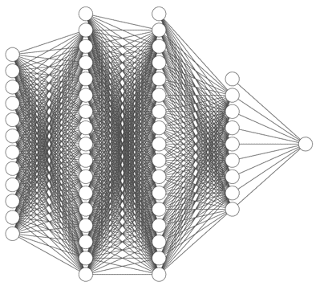
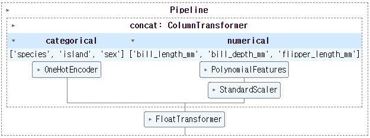
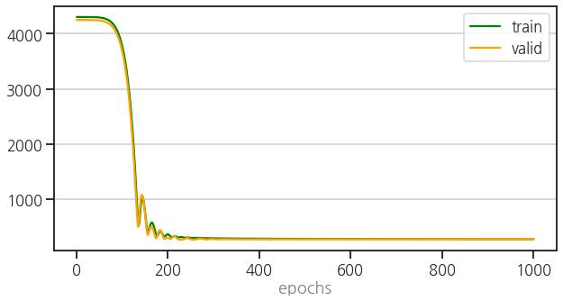
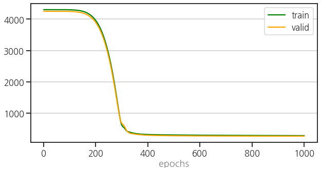
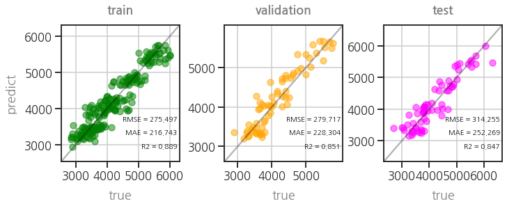

- PyTorch는 현재 가장 인기있는 딥러닝 라이브러리 중 하나입니다.
- 학습 세부 사항을 지정하기 위해 Callback으로 다양한 기능을 지원합니다.
- skorch는 PyTorch를 scikit-learn과 함께 사용할 수 있게 해 줍니다.
- skorch도 PyTorch callback을 이용할 수 있습니다.
- 글이 길어 세 개로 나눕니다.
- 두 번째로, scikit-learn을 사용해 전처리 파이프라인을 구성하고
- PyTorch neural network를 만들어 여기에서 나온 결과물을 학습시킵니다.
3. Neural Network
3.1. PyTorch
3.1.1. network and loss
- skorch는 scikit-learn Pipeline 안에 PyTorch Neural Network를 담을 수 있게 해줍니다.
- input node 수를 가변적으로 입력받을 수 있는, input-16-16-12-8-1 구조를 설계합니다.
- loss function은 RMSE를 만들어 사용합니다.
- PyTorch에서 MSE를 제공하긴 하지만, 오차의 범위가 직관적으로 보이는 RMSE를 더 선호합니다.
1
2
3
4
5
6
7
8
9
10
11
12
13
14
15
16
17
18
19
20
21
22
23
24
25
26
27
28# neural network: ninput(12)-16-16-12-8-1
class Net(nn.Module):
def __init__(self, ninput=12):
super().__init__()
self.layer0 = nn.Linear(ninput, 16)
self.layer1 = nn.Linear(16, 16)
self.layer2 = nn.Linear(16, 12)
self.layer3 = nn.Linear(12, 8)
self.layer4 = nn.Linear(8, 1)
self.activation = nn.ReLU()
def forward(self, x):
x = self.activation(self.layer0(x))
x = self.activation(self.layer1(x))
x = self.activation(self.layer2(x))
x = self.activation(self.layer3(x))
x = self.layer4(x)
return x
# loss: RMSE
class RMSELoss(nn.Module):
def __init__(self, eps=1e-6):
super().__init__()
self.mse = nn.MSELoss()
self.eps = eps
def forward(self, true, pred):
loss = torch.sqrt(self.mse(true, pred) + self.eps)
return loss
3.1.2. preprocessor using Pipeline
Pega Devlog: pytorch & sklearn pipeline
scikit-learn: sklearn.preprocessing.OneHotEncoder
scikit-learn: sklearn.preprocessing.PolynomialFeatures
scikit-learn: sklearn.compose.ColumnTransformer
- 펭귄 데이터셋에는 categorical feature가 세 개나 있습니다.
species,island,sex에는 숫자가 아닌 문자가 들어있기 때문에 신경망에 투입될 수 없습니다.- 여러 방법을 사용해 숫자로 바꿔주어야 합니다. 여기서는 one-hot-encoder를 사용하기로 합니다.
- 한편 numerical feature는 scaling이 필요합니다.
- 신경망의 weight를 수렴시키는 gradient descent를 안정적으로 만들기 위해서입니다.
- 관련해서는 지난 글에서 언급한 적이 있으니 여기서는 생략합니다.
- 다만, 지난 글보다 파이프라인을 분할해서 구성합니다.
- 부품이 잘 준비돼있으면 활용성이 높아지기 때문입니다.
categorical feature와 numerical feature에 각기 one-hot-encoding과 scaling을 적용해 합칩니다.
numerical feature에는 polymomial feature 생성기를 붙여 교호작용을 고려할 수 있는 장치를 만듭니다.
feature 유형에 따라 다른 길을 타고 들어간 데이터는
ColumnTransformer로 결합됩니다.마지막으로, float64 데이터 타입으로 float32로 변환하는
FloatTransformer를 추가합니다.OneHotEncoder등에서 생성되는 데이터 타입이 float64인데, PyTorch은 float32만 입력받기 때문입니다.1
2
3
4
5
6
7
8
9
10
11
12
13
14
15
16
17
18
19
20
21
22
23
24
25
26
27
28
29
30
31
32
33
34
35
36
37
38
39
40
41
42
43
44# preprocessors
from sklearn.preprocessing import OneHotEncoder
from sklearn.preprocessing import FunctionTransformer
from sklearn.preprocessing import StandardScaler
from sklearn.preprocessing import PolynomialFeatures
# pipeline
from sklearn.pipeline import Pipeline
from sklearn.compose import ColumnTransformer
from sklearn.base import BaseEstimator, TransformerMixin
# Preprocessings for Categorical and Numerical features
def get_concat(cols_cat=cols_cat, cols_num=cols_num, degree=1):
# categorical features: one-hot encoding
cat_features = cols_cat
cat_transformer = OneHotEncoder(sparse=False, handle_unknown="ignore")
# numerical features: standard scaling & polynomial features
num_features = cols_num
num_transformer = Pipeline(steps=[("polynomial", PolynomialFeatures(degree=degree)),
("scaler", StandardScaler())])
numcat = ColumnTransformer(transformers=[("categorical", cat_transformer, cat_features),
("numerical", num_transformer, num_features)])
return numcat
# Float64 to Float32 for PyTorch
class FloatTransformer(BaseEstimator, TransformerMixin):
def __init__(self):
pass
def fit(self, X, y=None):
return self
def transform(self, X):
return np.array(X, dtype=np.float32)
# preprocessing Pipeline
def get_preprocessor(cols_cat=cols_cat, cols_num=cols_num, degree=1):
concat = get_concat(cols_cat=cols_cat, cols_num=cols_num, degree=degree)
ft = FloatTransformer()
pipeline= Pipeline(steps=[("concat", concat),
("float64to32", ft)])
return pipeline작성한 전처리 파이프라인을 그림으로 출력해 확인합니다.
1
2
3
4
5from sklearn import set_config
set_config(display='diagram')
preprocessor = get_preprocessor()
preprocessor
preprocessor에 train, validation, test용으로 준비한 X 데이터를 투입합니다.
preprocessor를 통한 데이터는
numpy.ndarray로 변합니다.PyTorch에 넣기 위해
torch.Tensor로 한번 더 바꿔줍니다.y 데이터는 preprocessor에 넣을 필요가 없으니
torch.Tensor()에만 통과시킵니다.1
2
3
4
5
6
7
8
9
10
11
12
13# Xs
X_train_np = preprocessor.fit_transform(X_train)
X_val_np = preprocessor.transform(X_val)
X_test_np = preprocessor.transform(X_test)
X_train_tensor = torch.Tensor(X_train_np).to(device)
X_val_tensor = torch.Tensor(X_val_np).to(device)
X_test_tensor = torch.Tensor(X_test_np).to(device)
# ys
y_train_tensor = torch.Tensor(y_train.values).to(device)
y_val_tensor = torch.Tensor(y_val.values).to(device)
y_test_tensor = torch.Tensor(y_test.values).to(device)변환된 데이터의 타입을 확인합니다.
preprocessing후, 그리고
torch.Tensor()를 거치며 변하는 모습이 관찰됩니다.1
2
3
4
5
6
7
8# Xs
print(f"# dtype of X_train:\t\t{X_train.dtypes.values}")
print(f"# dtype of X_train_np:\t\t{X_train_np.dtype}")
print(f"# dtype of X_train_tensor:\t{X_train_tensor.dtype}\n")
# ys
print(f"# dtype of y_train:\t\t{y_train.dtype}")
print(f"# dtype of y_train_tensor:\t{y_train_tensor.dtype}")- 실행 결과
1
2
3
4
5
6# dtype of X_train: [dtype('O') dtype('O') dtype('float64') dtype('float64') dtype('float64') dtype('O')]
# dtype of X_train_np: float32
# dtype of X_train_tensor: torch.float32
# dtype of y_train: float64
# dtype of y_train_tensor: torch.float32
- 실행 결과
3.1.3. training & validation
- neural network와 preprocessor가 준비됐습니다.
- loss_function, optimizer, 최대 epochs를 지정하고,
- 한편으로 leanring rate scheduler와 early stopping도 동원합니다.
- train과 validation 함수와 함께 epoch에 따른 loss를 시각화하는 함수도 준비합니다.
1
2
3
4
5
6
7
8
9
10
11
12
13
14
15
16
17
18
19
20
21
22
23
24
25
26
27
28
29
30
31
32
33
34
35
36
37
38
39
40
41
42
43
44
45
46
47
48
49
50
51
52
53
54
55
56
57
58
59
60
61
62
63
64
65
66
67
68
69
70
71
72
73
74
75
76
77
78
79
80
81
82
83
84
85
86
87
88
89
90
91
92
93from torch.optim.lr_scheduler import OneCycleLR
net = Net().to(device) # Neural Network 생성
loss_fn = RMSELoss() # loss function 지정
optimizer = optim.Adam(net.parameters(),
lr=1e-3) # learning rate = 0.001
epochs = 1000 # number of max. epochs
onecycle = OneCycleLR(optimizer, # learning rate scheduler
max_lr=0.1, total_steps=epochs)
def train(device, model, epochs, loss_fn, optimizer, X_train, y_train, X_val=None, y_val=None,
lr_scheduler=None, early_stopping=1, patience=3, plot=True):
loss_trains = [] # train loss
loss_vals = [] # validation loss
loss_last = np.inf
patience_ = 0
val = False
if X_val != None and y_val != None:
val = True
for epoch in tqdm(range(epochs)):
model.train() # sets the model in training mode
optimizer.zero_grad() # gradient reset
y_pred = model.forward(X_train_tensor) # forward propagation
loss_ = loss_fn(y_pred, y_train_tensor.view(-1, 1)) # loss 계산
loss_.backward() # back propagation
optimizer.step() # weight update
if lr_scheduler:
lr_scheduler.step() # learning rate scheduler
loss = loss_.item()
loss_trains.append(loss) # collect train loss
# progress message
prog_msg = f"[{epoch}/{epochs}] train_loss: {loss}"
# validation
if val == True:
loss = validate(device, model, loss_fn, X_val, y_val)
loss_vals.append(loss) # collect validation loss
prog_msg += f", valid_loss: {loss}"
if epoch % 100 == 0:
print(prog_msg)
# early stopping : patience회 이상 loss_val이 감소하지 않을 때
if early_stopping > 0 and (loss > loss_last):
patience_ += 1
if patience_ >= patience:
print(f"early stopping: {loss_last}")
break
loss_last = loss
if plot:
if val:
plot_epoch(loss_trains, loss_vals)
else:
plot_epoch(loss_trains)
return model
def validate(device, model, loss_fn, X_val, y_val):
model.eval() # sets the model in evaluating mode
with torch.no_grad(): # gradient 계산 없이 진행
y_pred = net.forward(X_val) # forward propagation
loss = loss_fn(y_pred, y_val.view(-1, 1)) # loss 계산
return loss.item()
def plot_epoch(loss_trains, loss_vals=None, ax=None):
if ax == None:
fig, ax = plt.subplots(figsize=(10, 5))
ax.plot(list(range(1, len(loss_trains)+1)), loss_trains, c=c_train, label="train")
if loss_vals != None:
ax.plot(list(range(1, len(loss_vals)+1)), loss_vals, c=c_val, label="valid")
ax.grid(axis="y")
ax.set_xlabel("epochs", fontdict=font_label)
ax.legend()
return ax
net = train(device, net, epochs, loss_fn, optimizer, X_train_tensor, y_train_tensor, X_val_tensor, y_val_tensor,
lr_scheduler=None, early_stopping=0)- 실행 결과
1
2
3
4
5
6
7
8
9
10
11100% ■■■■■■■■■■■■■■■■■■■■■■■■■■■■■■■■■■■■■■■■ 1000/1000 [00:04<00:00, 222.90it/s]
[0/1000] train_loss: 4303.2822265625, valid_loss: 4250.70068359375
[100/1000] train_loss: 3756.332763671875, valid_loss: 3660.7578125
[200/1000] train_loss: 361.5039367675781, valid_loss: 295.07098388671875
[300/1000] train_loss: 289.6954650878906, valid_loss: 275.11474609375
[400/1000] train_loss: 282.8603210449219, valid_loss: 271.21929931640625
[500/1000] train_loss: 280.0774230957031, valid_loss: 271.82470703125
[600/1000] train_loss: 278.8686828613281, valid_loss: 272.6382141113281
[700/1000] train_loss: 278.05108642578125, valid_loss: 273.4883728027344
[800/1000] train_loss: 276.9803466796875, valid_loss: 275.0303039550781
[900/1000] train_loss: 276.1494140625, valid_loss: 275.9771728515625
- 실행 결과
3.1.4. parity plot
- training, valiation, testing set의 학습 결과를 비교하는 함수를 만듭니다.
- 참값(
true)과 예측값(pred)을 scatter plot으로 그립니다. - 여기에 MAE, RMSE, R2를 동시에 출력하는 함수를 만듭니다.
1
2
3
4
5
6
7
8
9
10
11
12
13
14
15
16
17
18
19
20
21
22
23
24
25
26
27
28
29
30
31
32
33
34
35
36
37
38
39
40
41
42
43
44
45
46
47
48
49
50
51
52
53
54
55
56
57
58
59
60
61
62
63
64
65
66
67
68
69
70
71
72
73
74
75
76
77
78
79
80
81
82
83
84
85
86
87
88
89
90
91
92
93
94
95import matplotlib.colors as colors
from sklearn.metrics import mean_absolute_error
from sklearn.metrics import mean_squared_error
from sklearn.metrics import r2_score
def get_metrics(true, pred):
mae = mean_absolute_error(true, pred)
rmse = mean_squared_error(true, pred, squared=False)
r2 = r2_score(true, pred)
return mae, rmse, r2
def plot_parity(true, pred, kind="scatter",
xlabel="true", ylabel="predict", title="",
hist2d_kws=None, scatter_kws=None, kde_kws=None,
equal=True, metrics=True, metrics_position="lower right",
figsize=(5, 5), ax=None, filename=None):
fig = None
if not ax:
fig, ax = plt.subplots(figsize=figsize, constrained_layout=True)
# data range
val_min = min(true.min(), pred.min())
val_max = max(true.max(), pred.max())
data_range = val_max - val_min
# data plot
if "scatter" in kind:
if not scatter_kws:
scatter_kws={'color':'green', 'alpha':0.5}
ax.scatter(true, pred, **scatter_kws)
elif "hist2d" in kind:
if not hist2d_kws:
hist2d_kws={'cmap':'Greens', 'vmin':1, 'bins':30}
ax.hist2d(true, pred, **hist2d_kws)
elif "kde" in kind:
if not kde_kws:
kde_kws={'cmap':'viridis', 'levels':5}
sns.kdeplot(x=true, y=pred, **kde_kws, ax=ax)
# x, y bounds
bounds = (val_min - data_range*0.1, val_max + data_range*0.1)
ax.set_xlim(bounds)
ax.set_ylim(bounds)
# x, y ticks, ticklabels
ticks = [int(y) for y in ax.get_yticks() if ((100*y)%100 == 0) and (val_min <= y <= val_max)]
ax.set_xticks(ticks, ticks)
ax.set_yticks(ticks, ticks)
# grid
ax.grid(True)
# 기준선
ax.plot(bounds, bounds, c="k", alpha=0.3)
# x, y label
font_label = {"color":"gray"}
ax.set_xlabel(xlabel, fontdict=font_label, labelpad=12)
ax.set_ylabel(ylabel, fontdict=font_label, labelpad=12)
# title
font_title = {"color": "gray", "fontweight":"bold"}
ax.set_title(title, fontdict=font_title, pad=16)
# metrics
if metrics:
rmse = mean_squared_error(true, pred, squared=False)
mae = mean_absolute_error(true, pred)
r2 = r2_score(true, pred)
if metrics_position == "lower right":
text_pos_x = 0.98
text_pos_y = 0.3
ha = "right"
elif metrics_position == "upper left":
text_pos_x = 0.1
text_pos_y = 0.9
ha = "left"
else:
text_pos_x, text_pos_y = metrics_position
ha = "left"
ax.text(text_pos_x, text_pos_y, f"RMSE = {rmse:.3f}",
transform=ax.transAxes, fontdict=font_metrics, ha=ha)
ax.text(text_pos_x, text_pos_y-0.1, f"MAE = {mae:.3f}",
transform=ax.transAxes, fontdict=font_metrics, ha=ha)
ax.text(text_pos_x, text_pos_y-0.2, f"R2 = {r2:.3f}",
transform=ax.transAxes, fontdict=font_metrics, ha=ha)
# 파일로 저장
if fig and filename:
fig.savefig(filename)
return ax
3.1.5. testing
training set으로 신경망을 학습시키고,
validation set으로 학습 현황을 모니터링하며
validation set의 성능이 마음에 들지 않을 경우 신경망의 구조나 learning rate와 같은 hyperparameter를 수정하여 성능을 높입니다.
이 과정을 거쳤다고 치고, training + validataion set으로 재학습을 시킨 후 testing data로 최종 결과를 얻습니다.
1
2
3
4
5
6
7
8
9
10
11
12
13
14
15
16# evaluate training and validataion set
with torch.no_grad():
y_pred_train = net.forward(X_train_tensor).cpu().numpy().flatten()
y_pred_val = net.forward(X_val_tensor).cpu().numpy().flatten()
# hyperparameter 업데이트 했다고 치고, training + validataion set으로 refit
X_Train_pp = preprocessor.fit_transform(X_Train)
X_Train_tensor = torch.Tensor(X_Train_pp).to(device)
y_Train_tensor = torch.Tensor(y_Train).to(device)
net = Net().to(device)
loss_fn = RMSELoss() # loss function 지정
optimizer = optim.Adam(net.parameters(),
lr=1e-3) # learning rate = 0.001
epochs = 1000
net = train(device, net, epochs, loss_fn, optimizer, X_Train_tensor, y_Train_tensor, X_val_tensor, y_val_tensor, early_stopping=0)- 실행 결과
1
2
3
4
5
6
7
8
9
10
11100% ■■■■■■■■■■■■■■■■■■■■■■■■■■■■■■■■■■■■■■■■ 1000/1000 [00:04<00:00, 270.43it/s]
[0/1000] train_loss: 4303.0849609375, valid_loss: 4250.50732421875
[100/1000] train_loss: 4298.97021484375, valid_loss: 4246.09326171875
[200/1000] train_loss: 3950.37841796875, valid_loss: 3884.753173828125
[300/1000] train_loss: 606.517822265625, valid_loss: 669.4122924804688
[400/1000] train_loss: 320.8173828125, valid_loss: 296.9498291015625
[500/1000] train_loss: 306.0234069824219, valid_loss: 281.5106506347656
[600/1000] train_loss: 299.0507507324219, valid_loss: 276.0859375
[700/1000] train_loss: 294.1066589355469, valid_loss: 272.7406921386719
[800/1000] train_loss: 290.13287353515625, valid_loss: 270.5881652832031
[900/1000] train_loss: 287.00494384765625, valid_loss: 269.0577697753906
- 실행 결과
testing 결과까지 얻은 후, 최종적으로 parity plot 세 개를 같이 그립니다.
1
2
3
4
5
6
7
8
9
10
11
12
13
14
15# evaluate testing set
with torch.no_grad():
y_pred_test = net.forward(X_test_tensor).cpu().numpy().flatten()
# parity plots
fig, axs = plt.subplots(ncols=3, figsize=(10, 4), constrained_layout=True)
trues = [y_train, y_val, y_test]
preds = [y_pred_train, y_pred_val, y_pred_test]
colors = [c_train, c_val, c_test]
titles = ["train", "validation", "test"]
for ax, true, pred, c, title in zip(axs, trues, preds, colors, titles):
plot_parity(true, pred, ax=ax, scatter_kws={"fc":c, "ec":c, "alpha":0.5}, title=title)
if ax != axs[0]:
ax.set_ylabel("")
펭귄 체중이 제법 괜찮게 예측되고 있습니다.
scikit-learn Pipeline으로 categorical feature와 numerial feature에 적절한 처리를 마친 후,
PyTorch로 딥러닝 학습을 잘 시킨 것입니다.
- Pipeline으로 전처리 과정을 모두 묶었고, PyTorch 딥러닝을 함수화 했습니다.
- 하지만 PyTorch로 따로 넘어가는 과정이 따로 노는 느낌이 듭니다.
- 이제 하나로 묶어볼 차례입니다.
- 넘어가기 전에, parity plot을 그린 명령도 함수로 정리합니다.
1
2
3
4
5
6
7
8
9
10
11
12
13
14
15
16def plot_parity3(model, target=["train", "val", "test"], figsize=(10, 4),
Xs=None, trues=None, preds=None, colors=None):
if not Xs:
Xs = [eval(f"X_{t}") for t in target]
if not trues:
trues = [eval(f"y_{t}") for t in target]
if not preds:
preds = [model.predict(X) for X in Xs]
if not colors:
colors = [eval(f"c_{t}") for t in target]
fig, axs = plt.subplots(ncols=len(target), figsize=figsize, constrained_layout=True)
for ax, true, pred, c, title in zip(axs, trues, preds, colors, titles):
plot_parity(true, pred, ax=ax, scatter_kws={"fc":c, "ec":c, "alpha":0.5}, title=title)
if ax != axs[0]:
ax.set_ylabel("")